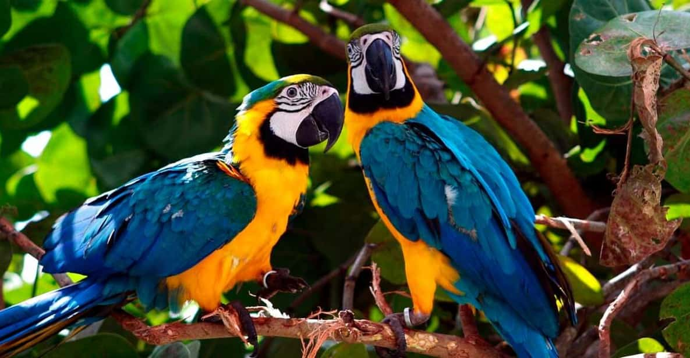

Colpa de los Loros: Un espectáculo natural en la Amazonía peruana
La Colpa de los Loros es uno de los espectáculos naturales más impresionantes de la Amazonía peruana, ubicada en la Reserva Nacional Tambopata, en la región de Madre de Dios. Cada mañana, cientos de loros y guacamayos llegan a este sitio para alimentarse de la arcilla rica en minerales, ofreciendo una experiencia única para los visitantes.
Historia
Este fenómeno natural ha sido estudiado por científicos debido a su importancia ecológica y su impacto en la salud de las aves. La arcilla de la colpa ayuda a neutralizar las toxinas de los frutos y semillas que consumen los loros en su dieta diaria, convirtiendo el lugar en un punto clave para la observación de aves en la Amazonía.

Horarios y Ubicación
- Ubicación: Reserva Nacional Tambopata, región de Madre de Dios, Perú.
- Horarios de visita: Generalmente en la madrugada, desde las 5:00 a.m. hasta las 8:00 a.m.
- Costo de entrada: Depende de la agencia de turismo y el paquete seleccionado.
Consejos para Visitantes
- Sal temprano: La mejor hora para ver a los loros es antes del amanecer.
- Usa ropa de colores neutros: Para no asustar a las aves y facilitar la observación.
- Lleva binoculares: Te permitirán apreciar mejor a los loros y guacamayos.
- Respeta el silencio: Mantén el ruido al mínimo para no perturbar a las aves.
- Elige un guía especializado: Un guía te brindará información valiosa sobre la fauna y el ecosistema.